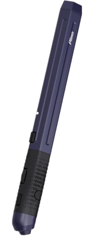

Incoherent Ramblings
This is the page where I can rant all I want about the comic and its production.
Origins:
I started this comic so I had the motivation to draw and create a story on a regular
and daily basis. After finishing The Night School (my 200 page vampire comic) in a week,
I realized that I was capable of completing a long form story in comic form, but that
this style of workflow was unsustainable. So, I created a story with a very limited cast
and an open premise that would allow for a lot of weird and wacky adventures, in a serialized
format.

Workflow:
I learned a lot of neat tricks while working on The Night School. First, I like working
in a low resolution - like the flipnotes I loved as a kid. The aliased look is also easy
to work with, especially with fills. Second, I wanted a limited color palette.
Other tricks include the use of vector layers, the .cmc file format, page presets, lots of hotkeys,
and limited use of layers, overuse of gradients, and the importance of composition.
One new tool i've been using is this goofy pen mouse. It's a pen that has an optical sensor and acts like a mouse.
This pen makes the act of drawing a lot more spontaneous, as I dont have to haul out all my
drawing tablet equipment, cables, the stand, or plug it all in. I can just flip a switch and go.
It's not as comfortable as a proper drawing tablet, but the lack of pressure sensitivity has me focusing
a lot more on drawing and form, and a lot less on linework, settings, or redraws.
Here's the link to the one I got:
Link